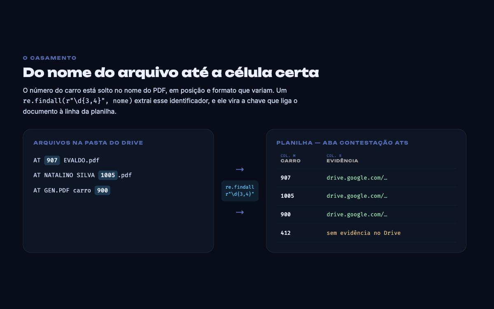
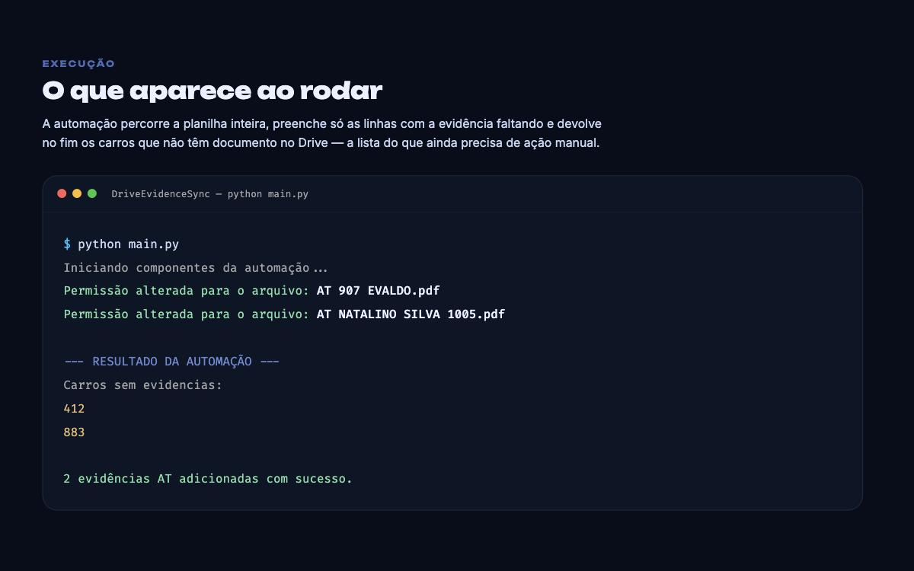
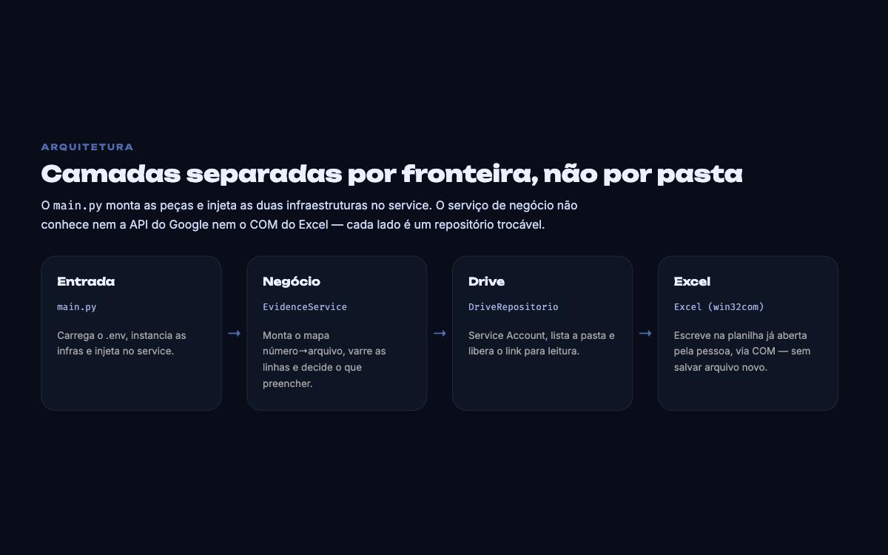

Voltar aos projetos
Drive Evidence Sync
Automação de rotina interna — tira o copiar e colar da conferência de evidências
- O problema
- A planilha de contestação de ATs tem uma linha por carro e uma coluna que precisa do link do documento correspondente no Drive. Preencher isso é abrir a pasta, achar o PDF do carro, copiar o link, voltar na linha certa e colar — centenas de vezes, com erro de linha trocada sempre à espreita.
- A chave do problema
- O número do carro existe nos dois lados, mas no Drive ele está solto no meio do nome do arquivo, em posição e formato que variam (
AT 907 EVALDO.pdf,AT NATALINO SILVA 1005.pdf,AT GEN.PDF carro 900). Umre.findall(r"\d{3,4}", nome)extrai esse identificador e ele vira a chave de um dicionário que liga documento e linha. - Escreve na planilha que já está aberta
- Em vez de gerar um arquivo novo, o script se conecta por Win32 COM à instância do Excel em execução e escreve direto na aba Contestação ATs. Quem está usando a planilha vê as células sendo preenchidas, sem precisar fechar nada, importar ou reconciliar versões.
- Não sobrescreve o que já existe
- Só escreve onde a célula de evidência está vazia. Rodar duas vezes seguidas não desfaz nem duplica nada, e o preenchimento manual que alguém já tenha feito é preservado.
- O link precisa abrir para quem recebe
- Depois de preencher, a automação passa nos arquivos que usou e ajusta a permissão para leitura pública. Sem esse passo o link entra na planilha mas dá acesso negado para quem for conferir.
- Devolve o que faltou
- No fim ele imprime os carros que não têm documento nenhum no Drive. Essa lista é o resultado que interessa: a automação resolve o volume e entrega recortado o punhado de casos que ainda exige uma pessoa.
- Arquitetura
- O
main.pycarrega o.env, instancia as duas infraestruturas e as injeta no service. OEvidenceServiceconcentra a regra e não conhece nem a API do Google nem o COM do Excel — cada lado é um repositório trocável. - Uma nota sobre as imagens
- O projeto não tem interface e depende de Excel no Windows: as peças ao lado são diagramas do funcionamento e a saída que o script imprime no terminal.
-

Do arquivo até a célula -

Execução no terminal -

Camadas do projeto